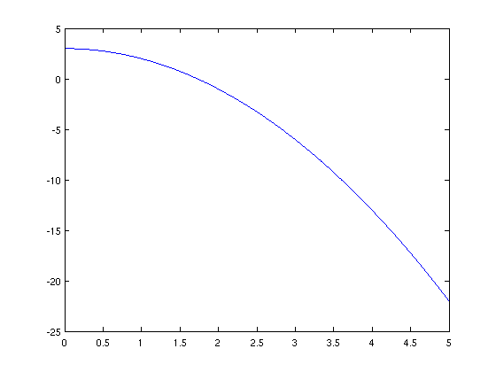
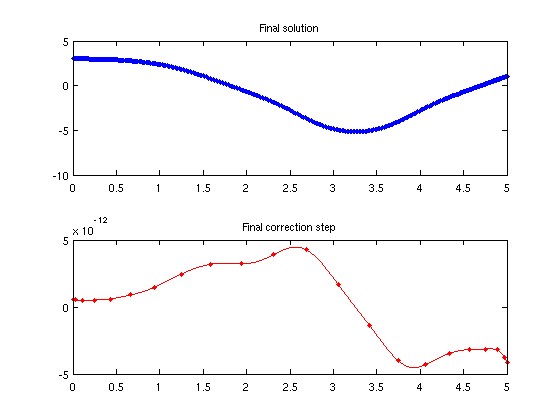
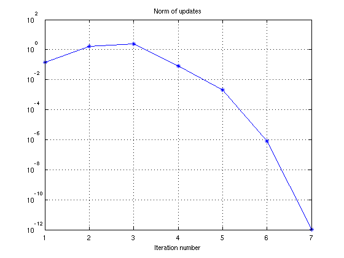
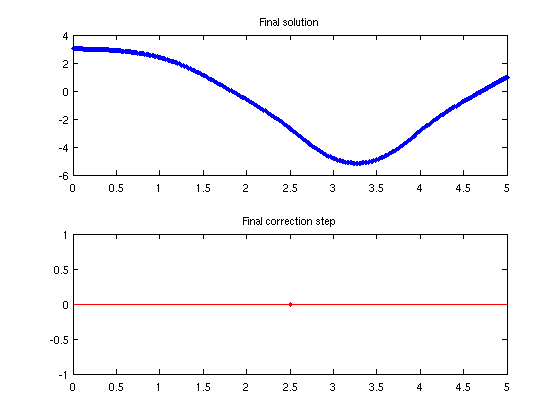
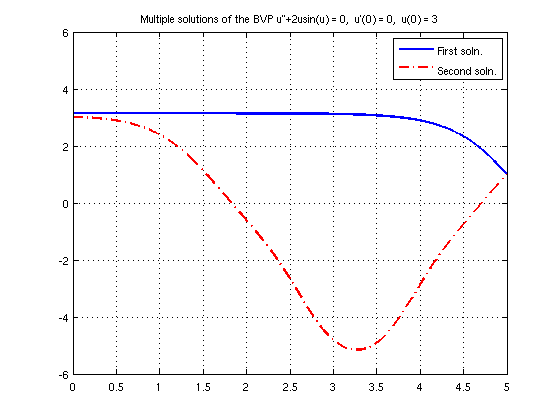

Multiple BVP solutions by solving an IVP
Asgeir Birkisson, May 2011
Contents
(Chebfun example ode/TwoSolBVPfromIVP.m)
It is well known that nonlinear boundary-value problems (BVPs) can have multiple solutions. However, it is difficult to construct general numerical methods to find these solutions -- whereas we can often hope to find one solution with common numerical software, we have to use clever tricks to find more solutions.
One such trick is to start by solving an initial value problem (IVP) with initial conditions similar to the boundary conditions of the original BVP, and use the solution of the IVP as an initial guess for the solution of the BVP. Here, this method is demonstrated for the nonlinear BVP
u''+2usin(u) = 0, u'(0) = 0, u(5) = 1
We start by solving the BVP using a constant initial guess, then obtain another initial guess by solving the IVP
u''+2usin(u) = 0, u'(0) = 0, u(0) = 3
and find another solution to the BVP by using that initial guess.
Obtaining the first solution, constant initial guess
Here, our initial guess of the solution is the constant function u(x) = pi.
Setup a BVP chebop
Nbvp = chebop(0,5);
Nbvp.op = @(u) diff(u,2)+2*u.*sin(u);
Nbvp.lbc = 'neumann'; Nbvp.rbc = 1;
Assign the initial guess u(x) = pi, and solve using nonlinear backslash
Nbvp.init = pi;
bvpSol1 = Nbvp\0;
disp(['Residual, first solution: ' num2str(norm(Nbvp(bvpSol1)))])
Residual, first solution: 1.9552e-11
Obtaining an initial guess by solving an IVP
Here, we obtain an initial guess for the solution of the BVP by solving an IVP. The solution of the IVP will satisfy
u''+2usin(u) = 0, u'(0) = 0, u(0) = 3
Setup a IVP chebop and solve (the system will automatically construct an initial guess for this problem):
ca, clc cheboppref('display','iter','plotting','on','damped','on') Nivp = chebop(0,5); x = chebfun('x',domain(Nivp)); Nivp.op = @(u) diff(u,2)+2*u.*sin(u); Nivp.lbc = @(u) [diff(u),u-3]; Nivp.init = -x.^2 + 3; plot(Nivp.init) ivpSol = Nivp\0;
Iter. || update || length(update) stepsize length(u)
---------------------------------------------------------------------------
1 1.462e-01 134 1 134
2 1.726e+00 237 1 237
3 2.394e+00 432 1 432
4 8.210e-02 432 1 432
5 1.969e-03 267 1 432
6 8.460e-07 111 1 432
7 1.027e-12 22 1 432
7 iterations
Final residual norm: 2.19e-04 (interior) and 2.39e-07 (boundary conditions).
   Obtaining the second solution
We now assign the solution of the IVP as the initial guess to the original BVP chebop, and find another solution of the problem:
Nbvp.init = ivpSol;
bvpSol2 = Nbvp\0;
disp(['Residual, second solution: ' num2str(norm(Nbvp(bvpSol2)))])
Iter. || update || length(update) stepsize length(u)
---------------------------------------------------------------------------
1 1.633e-02 108 1 432
2 3.267e-02 90 1 432
3 6.841e-04 107 1 432
4 8.598e-06 106 1 432
5 3.049e-10 69 1 432
6 0.000e+00 1 1 432
6 iterations
Final residual norm: 2.55e-04 (interior) and 4.81e-07 (boundary conditions).
Residual, second solution: 0.0016488
 
Plotting
A plot of both the solutions is shown below:
plot(bvpSol1,'linewidth',2), hold on, plot(bvpSol2,'r-.','Linewidth',2), grid on legend('First soln.','Second soln.'), ylim([-6 6]) title('Multiple solutions of the BVP u''''+2usin(u) = 0, u''(0) = 0, u(0) = 3')